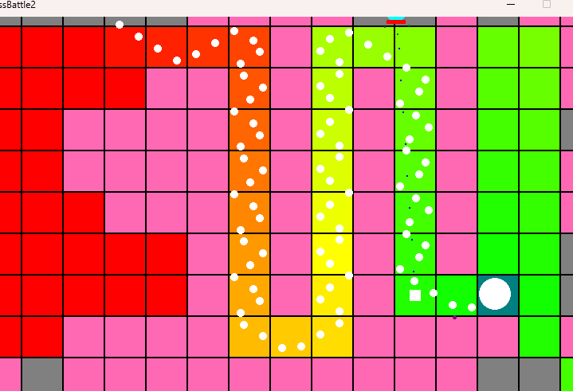
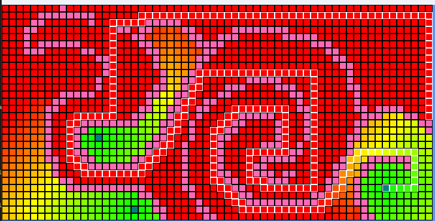

Screenshots & Progress
Some screenshots of development



This is a top-down bullet-hell game where the player survives waves of spawning enemies using projectiles and teleportation using simulation and AI techniques. For simulation, the physics uses forces, velocity, and acceleration to control player and projectile movement. Circle and AABB collision detection handles interactions with walls and other projectiles. The grid-based environment also supports A* pathfinding towards the player.
Enemy AI uses a finite state machine with behaviors including pathfinding, maintaining distance and ramming. Steering behaviors such as Seek and collision avoidance control enemy movement, while transitions change states based on conditions such as line of sight and health.
A separate map editor allows developers to create, resize and customize tile maps, which are saved and loaded through serialization. It supports manual tile drawing, camera movement, and procedural map generation using noise and cellular automata.
Cellular automata creates natural-looking wall layouts by evaluating neighboring tiles over multiple iterations. However, it does not guarantee every area is reachable, so flood fill could be added to remove inaccessible sections and ensure valid maps.
Some screenshots of development

